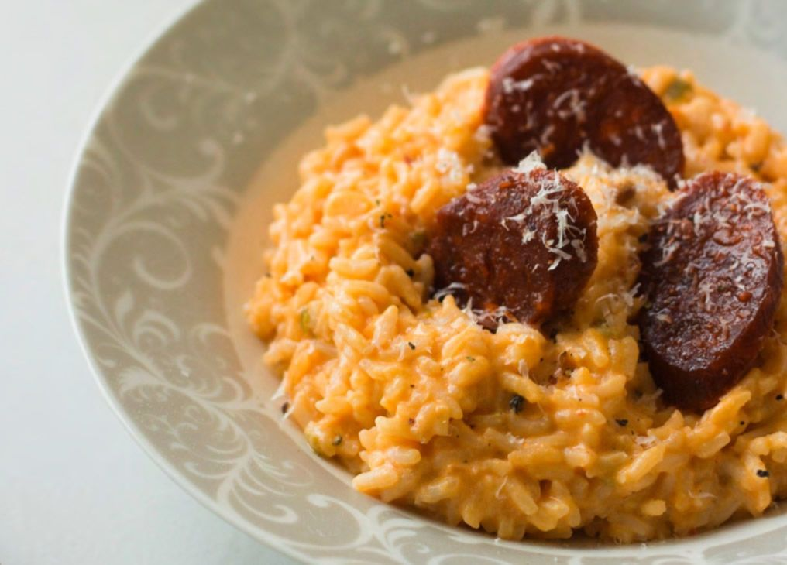

Go back to Homepage
The best Risotto Recipe in the World!

Description
There is nothing as creamy and delicious as risotto. All you need is a little butter and cheese and wine to enjoy this cheesy Pepperoni & Sausage Risotto.
Ingredients
- 1 package of Mini Pepperonis
- 1 tablespoon olive oil
- 3 tablespoons unsalted butter
- 1 ½ cups Arborio or Carnaroli rice
- 1-2 large cloves garlic, minced
- 1 tablespoon onion powder
- ½ teaspoon freshly ground black pepper
- Ricotta Cheese
- Salt and black pepper, to taste
Directions
- Heat 1 tablespoon of olive oil on medium-high heat and stir in pepperoni. Cook while stirring until crispy.
- In the same sauce pot (leave remaining olive oil), melt 2 tablespoon of the butter over medium heat. Add the rice, garlic, onion powder, and freshly ground black pepper and stir until the rice is well coated.
- Add 1 cup of water into the rice and allow to cook, stirring occasionally, until the water is absorbed, until you have added 3 cups and the rice is cooked.
- While the rice is cooking, add the ricota cheese. Stir until rice absorbs the majority of the liquid. Taste and adjust seasoning. Serve warm, topped with crispy pepperoni!!
Add some parmesan on top and enjoy!!